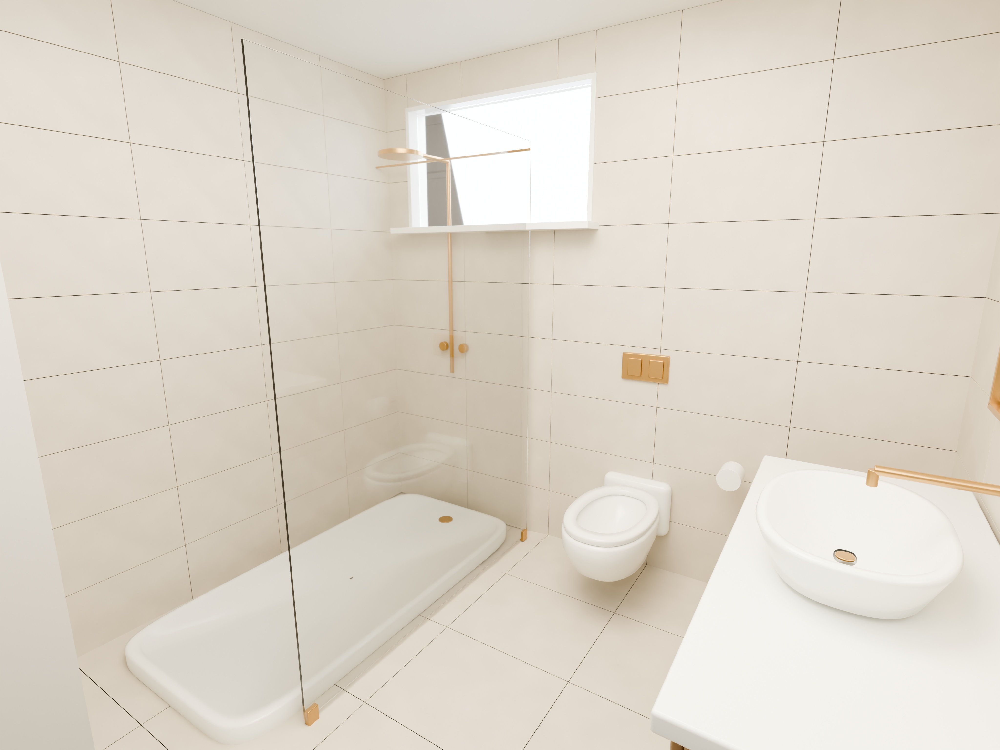
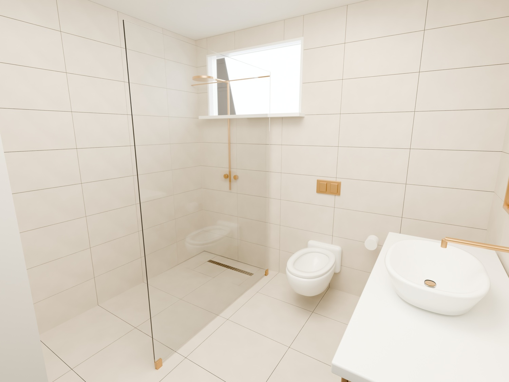
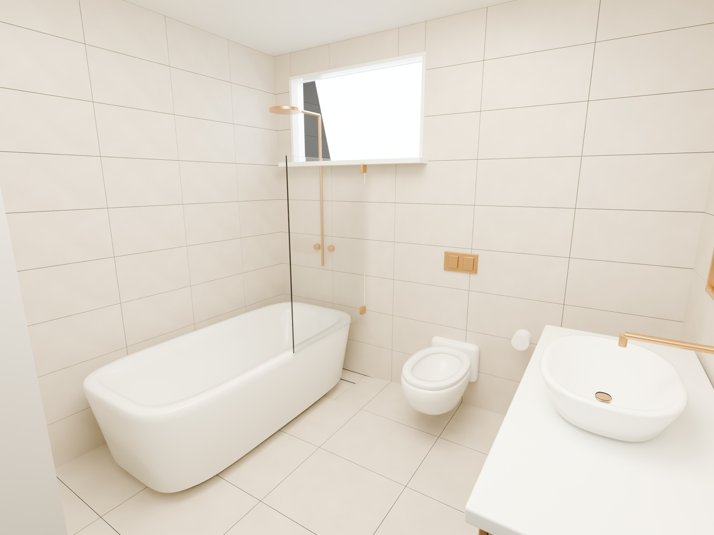

Jedna łazienka.
Trzy konfiguracje.
Autorski projekt demonstracyjny: jeden model bazowy, trzy rzeczywiste zestawy wyposażenia i rendery 4096 × 3072 px. Kamera, perspektywa i oświetlenie pozostają stałe.


Zmienia się wyposażenie.
Wariant liniowy zastępuje brodzik rzeczywistym odpływem i posadzką ze spadkiem. Wariant z wanną wymienia geometrię urządzenia oraz szklany ekran. Ściany, okno, WC, umywalka, zabudowa i armatura pozostają wspólne.

02 / odpływ liniowy
Otwórz obraz 4K

03 / wanna + prysznic
Otwórz obraz 4K
Porównywalne kadry do konfiguratora.
Źródła mają tę samą transformację kamery, ogniskową 19,5 mm, rozdzielczość i światła. Cienie są obliczane fizycznie dla wybranego wyposażenia. Obrazy są powiązane z identyfikatorami wariantów w pliku manifestu.
Wszystkie elementy to edytowalna geometria: otwarte niecki ceramiki, szkło, kratka odpływu i zabudowa. Materiały są proceduralne.
Natywna weryfikacja
- Trzy pliki .blend ponownie otwarte i wyrenderowane.
- Spójne wymiary bazowe oraz stała geometria pomieszczenia.
- Identyczna kamera, ogniskowa i ustawienia światła.
- Różne, rzeczywiście widoczne grupy wyposażenia.
- Sprawdzona wysokość brodzika, wanny i odpływu.